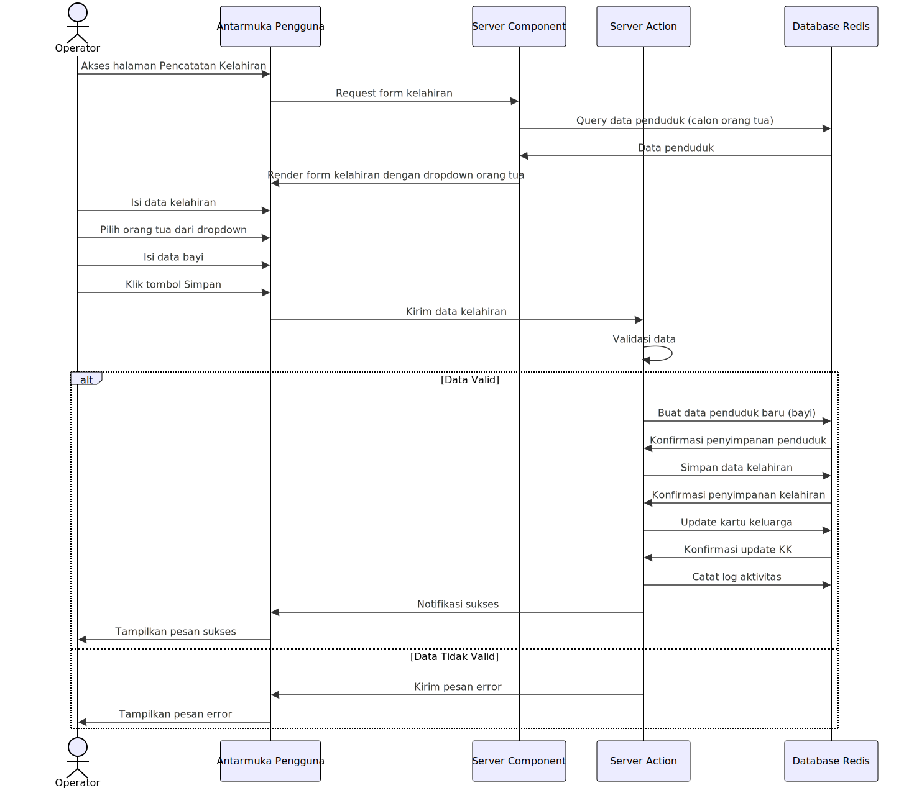
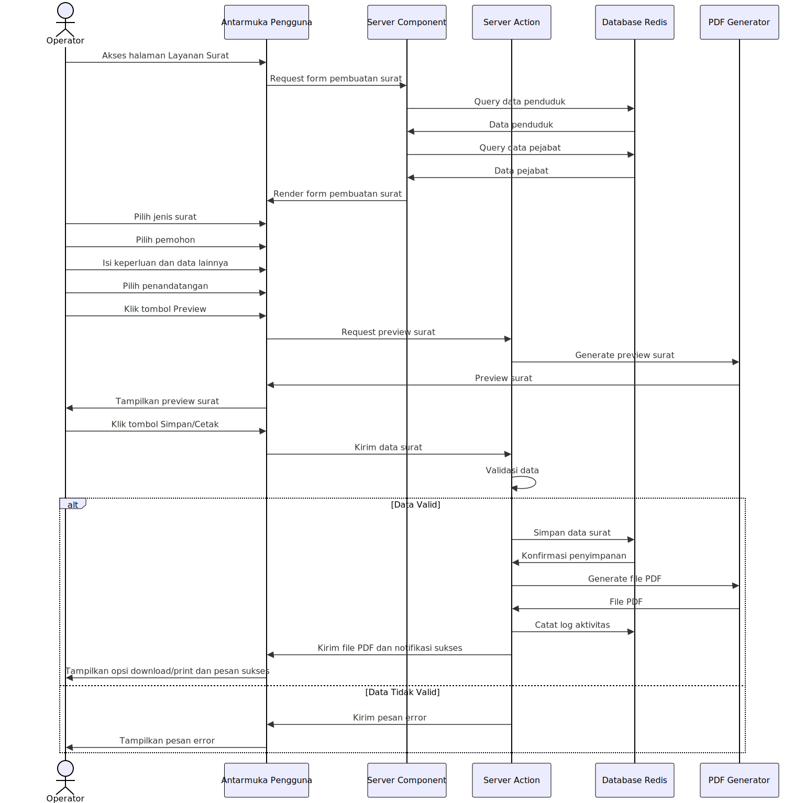

Sistem Informasi Kependudukan (SIPENDUK)
SIPENDUK adalah sistem berbasis web yang dirancang untuk membantu pengelolaan data kependudukan desa secara efisien. Sistem ini mencakup pencatatan data penduduk, kartu keluarga, peristiwa kependudukan, serta menyediakan dashboard dengan visualisasi statistik untuk mendukung pengambilan keputusan.
1. Arsitektur Sistem
SIPENDUK menggunakan arsitektur berbasis web application dengan teknologi modern stack yang mendukung skalabilitas dan efisiensi dalam pengelolaan data kependudukan.

Komponen utama sistem:
Frontend: Dibangun dengan Next.js untuk memberikan pengalaman pengguna yang interaktif dan cepat.
Backend: Menggunakan API berbasis Next.js App Router untuk menangani logika bisnis dan pemrosesan data.
Database: Memanfaatkan Redis sebagai penyimpanan utama untuk performa tinggi.
Autentikasi & Otorisasi: Menggunakan NextAuth.js untuk manajemen pengguna dengan akses berbasis peran.
2. Struktur Database
Sistem ini menggunakan model data yang dirancang untuk menangani berbagai entitas kependudukan seperti penduduk, kartu keluarga, kelahiran, kematian, dan perpindahan.

Relasi antar entitas mencakup:
Penduduk ↔ Kartu Keluarga: Satu kartu keluarga memiliki banyak anggota.
Penduduk ↔ Peristiwa Kependudukan: Setiap penduduk bisa memiliki riwayat kelahiran, kematian, kedatangan, dan perpindahan.
Penduduk ↔ Surat Keterangan: Penduduk dapat mengajukan berbagai jenis surat keterangan administratif.
Untuk representasi hubungan yang lebih mendetail, lihat diagram Entity Relationship Diagram (ERD) berikut:

3. Alur Penggunaan Aplikasi
a. Pendaftaran Penduduk Baru

Petugas memasukkan data penduduk baru.
Data diverifikasi sebelum disimpan dalam database.
Sistem memperbarui statistik kependudukan desa.
b. Pencatatan Kelahiran

Data bayi baru lahir dicatat oleh petugas.
Sistem menghubungkan bayi dengan orang tua dalam kartu keluarga.
Akta kelahiran dapat diterbitkan setelah diverifikasi.
c. Pembuatan Surat Keterangan

Penduduk mengajukan permohonan surat keterangan.
Sistem memverifikasi data pemohon.
Surat diterbitkan dan dapat dicetak dalam format PDF.
d. Alur Kerja Aplikasi Secara Keseluruhan
Diagram ini menggambarkan bagaimana pengguna berinteraksi dengan sistem dari login hingga pengelolaan data kependudukan. Untuk detail teknis lebih lanjut, lihat diagram berikut:

4. Fitur Utama
Manajemen Data Penduduk: Pencatatan dan pemutakhiran data warga desa.
Manajemen Kartu Keluarga: Penyimpanan informasi keluarga dan anggota rumah tangga.
Pencatatan Peristiwa Kependudukan:
Kelahiran
Kematian
Kedatangan
Perpindahan
Pembuatan Surat Keterangan: Otomatisasi pengajuan dan pencetakan surat administratif.
Dashboard Statistik: Visualisasi data kependudukan dalam bentuk grafik.
Autentikasi Multi-Level: Sistem akses berdasarkan peran (admin, operator, dan guest).
5. Teknologi yang Digunakan
| Teknologi | Keterangan |
|---|---|
| Next.js 14 | Framework frontend & backend berbasis React dengan App Router. |
| Redis | Database NoSQL yang cepat untuk penyimpanan data kependudukan. |
| Tailwind CSS | Framework CSS untuk tampilan antarmuka yang modern dan responsif. |
| shadcn/ui | Library UI berbasis Radix untuk komponen antarmuka. |
| TypeScript | Bahasa pemrograman dengan dukungan tipe statis untuk meningkatkan keandalan kode. |
SIPENDUK dirancang untuk memberikan solusi digital yang terstruktur dalam pengelolaan administrasi kependudukan desa. Dengan sistem ini, pencatatan data menjadi lebih akurat, efisien, dan mudah diakses oleh pihak yang berwenang.